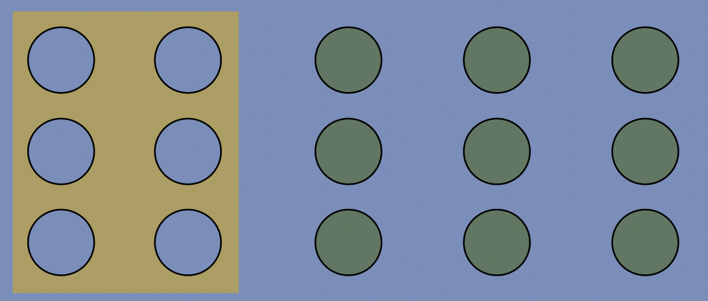
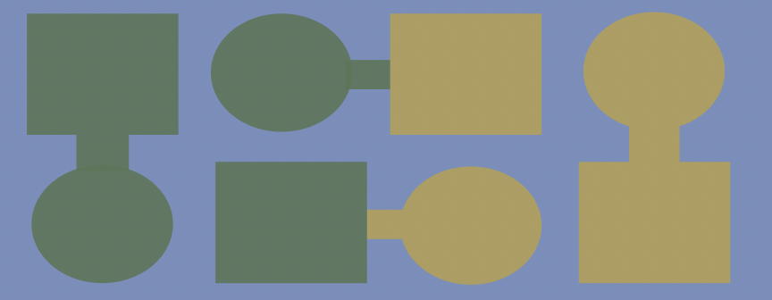
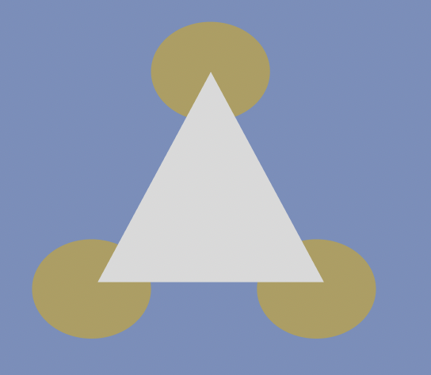
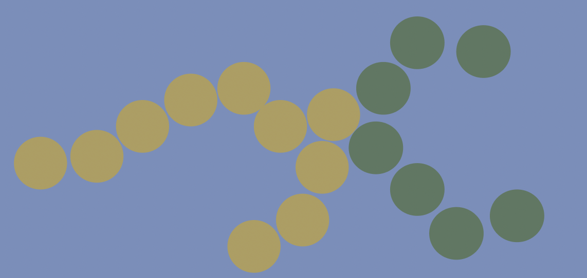

Gestaltlovende (Law of UX)
Gestaltlovende & Law og UX, hvad er det?
Er principper/loven om den menneskelige opfattelse.
De beskriver hvordan vi mennesker forstår og opfatter verden,
hvordan vi grupperer lignende elementer,
hvordan vi genkender mønstre og forenkler komplekse billeder, når vi opfatter objekter.
Gestaltlovene er især vigtige og brugbare, når det kommer til visuel kommunikation. Her kan teorien bruges til at skabe en form for organisation og system, hvos man vil kommunikere på en visuelt god måde.
I dag foregår meget kommunikation på online platforme, herunder hjemmesider og sociale medier. Det stiller store krav til den visuelle kommunikation, som er blevet mere afgørende end nogensinde før. Gestalt lovene er derfor essentielle for designere, som til dagligt arbejder med at give modtageren/ brugeren den bedste oplevelse.
Loven om nærhed
Loven om nærhed er, at tegn, symboler, billeder og andre visuelle effekter, som placeres i nærheden af hinanden, opfattes som hørende sammen.
Det giver modtageren en forståelse af, at de passer sammen og har noget med hinanden at gøre. Dette er gældende uanset, hvad man placerer i området.
Modtageren vil stadig have samme forståelse af, at de passer sammen – eller i det mindste har noget med hinanden at gøre. Specielt hvis man også kombinerer det med forskellige farver.
Loven om common region
Princippet om fælles region siger, at elementer inden for en grænse opfattes som en gruppe og antages at dele nogle fælles karakteristika eller funktionalitet.
Grænsen omkring de seks cirkler i denne grafik får dem til at fremstå relaterede og som en del af den samme gruppe.
Loven om ensartethed
Denne lov er, at tegn, symboler, billeder og andre visuelle effekter betragtes som hørende sammen, hvis de er ens eller minder om hinanden.
Det er gangske simpelt, når elementer ligner hinanden eller minder om hinanden, vil man automatisk tænke, at de hører sammen.
Som vi kan se et eksempel på nedeunder, med firkanterne og cirklerne. På grund af deres form og farve.
Loven om figurdannelse
Loven om figurudannelsen er, at tegn, symboler, billeder og andre visuelle effekter, som er som hjernen ikke kan placere som sådan, må høre sammen på en eller anden måde.
Det kan være ved brug af linjer, kasser, bobler eller noget helt fjerde.
I tilfældet nedeunder har man placeret tre cirkler og en trekant. Ellers vil symbolerne ikke give mening, for så ligner de bare udskårne oste eller packmans.
Loven om forbundethed
Loven om forbundethed er, at tegn, symboler, billeder og andre visuelle effekter, som er forbundet på den ene eller anden måde, betragtes som hørende sammen.
Det kan være ved hjælp af linjer, pile eller noget helt tredje.
Som eksempel nedeunder, man følger Man følger “de gode linjer”, som selv overskygger de forskellige farver på prikkerne. Så “gode linjer” er faktisk stærkere end farve-elementerne.
Loven om figur og baggrund
Loven om figur og baggrund handler om, hvordan vores hjerner er rigtig gode til at bestemme, hvad der er i forgrunden, og hvad der er i baggrunden.
Denne funktion bruges for eksempel i Photoshop til at lave masker med et enkelt klik.
Det er den samme funktion, vi bruger, når vi bruger portrættilstand på en iPhone, når vi tager billeder.
Som ved et trylleslag ved kameraet, hvad der er foran billedet, og derfor vigtigt og i fokus.
Det handler i virkeligheden om, at vores hjerne er virkelig god til at se, hvad der er i forgrunden, og hvad der er i baggrunden af et billede.
Vi er super intelligente til netop det visuelle aspekt i forgrund / baggrund.

Hvad kan det?
Det kan bruges i designprocessen, bruges primært til at fremhæve ting, hvad vil du gerne have dine brugere til at se, og måske ikke se?
Hvor kan jeg bruge det?
Jeg har brugt gestaltlovene til vores band-hjemmeside projekt. Der brugte jeg det til at dele kunsterne og information/ baggrund om selve bandet op. Se det her: Bratmobile.